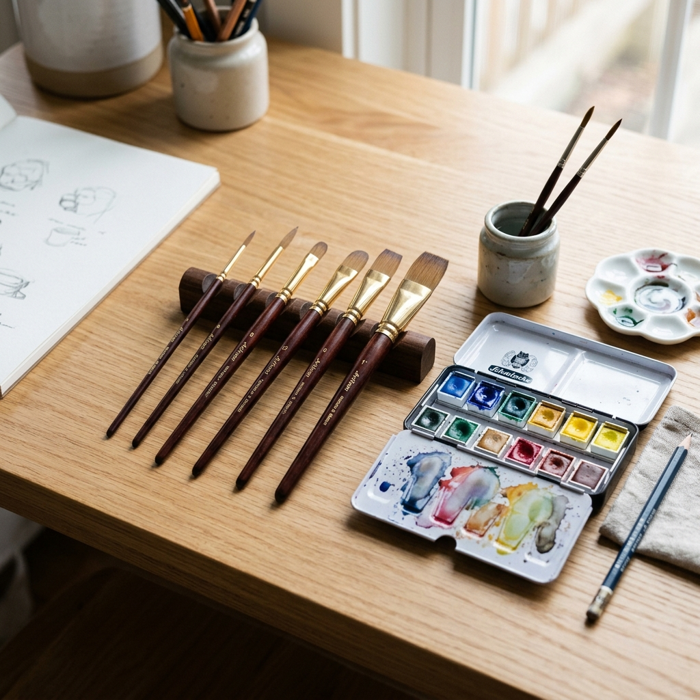

Unleash your creativity with premium handcrafted brushes designed for watercolors, acrylics, and oil paints.
$24.99 $34.99
Buy Now
Our brushes are made from high-grade synthetic fibers that hold their shape, absorb color beautifully, and resist shedding.
Each brush features a carefully balanced, triangular wooden handle that provides a comfortable grip and reduces hand fatigue.
Double-crimped aluminum ferrules secure the bristles firmly to the handle, preventing wobbling and ensuring long-lasting durability.
| Material: | Synthetic Nylon, Birch Wood |
| Use Case: | Watercolor, Acrylic, Oil |
| Colors: | Natural Wood, Matte Black |